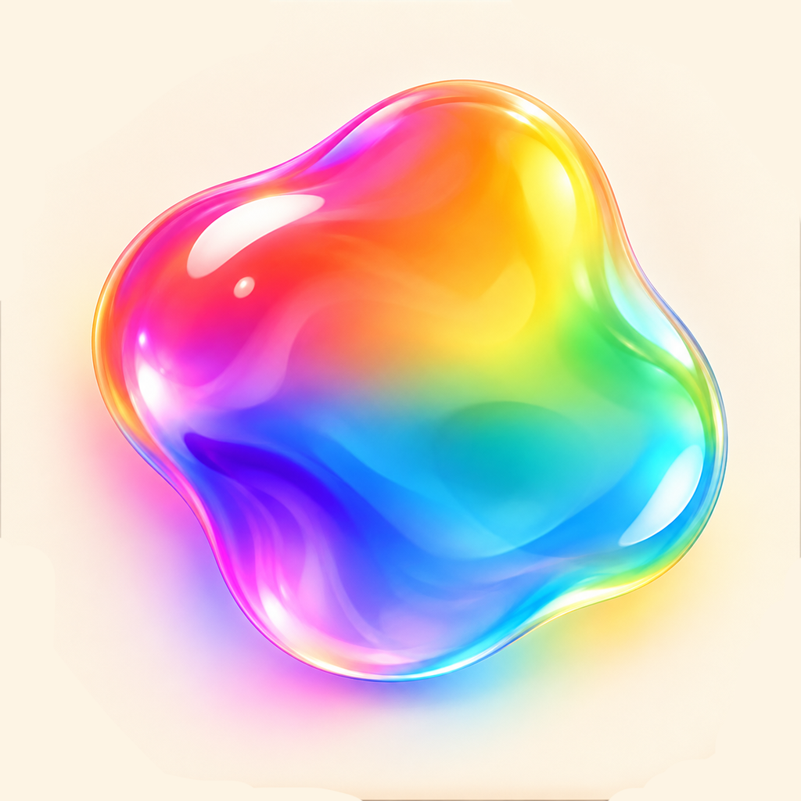

October 2026 · iOS Game Development

Hue (app)Hue is an iPhone game I built with SwiftUI. I had the idea for this game for a while now. The object is to match the color in the middle of the screen to the name of the color appearing on screen. As you hold the screen down, the color in the middle morphs through the spectrum. Release once you match the color to move on to the next level.
As you progress, a more diverse set of color names unlocks. There are milestone animations at levels 10, 20, 30, and so on, and the visuals become increasingly dreamlike. I wanted to make not only a fun game, but also something captivating and entrancing—a relaxing little brain break.
I also think Hue is a great learning tool for kids discovering new colors.
One of the hardest parts of the project was learning to use Metal shaders in Xcode to get the central colored blob looking right.
Next, I want to add music and continue improving the visuals.
Will be on the app store soon!
Swift · SwiftUI · iOS · Game Development · Animation